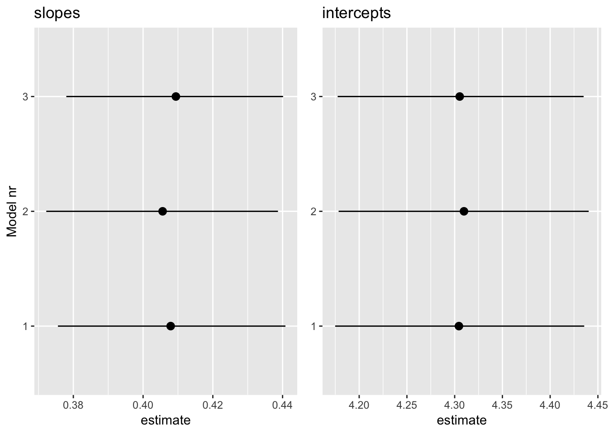
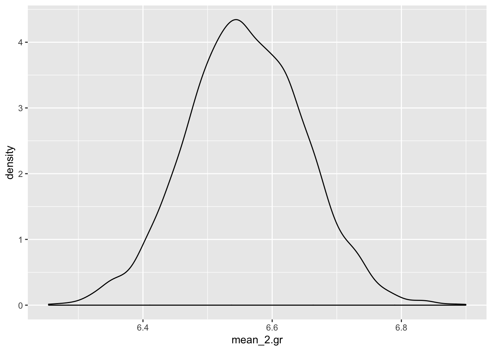
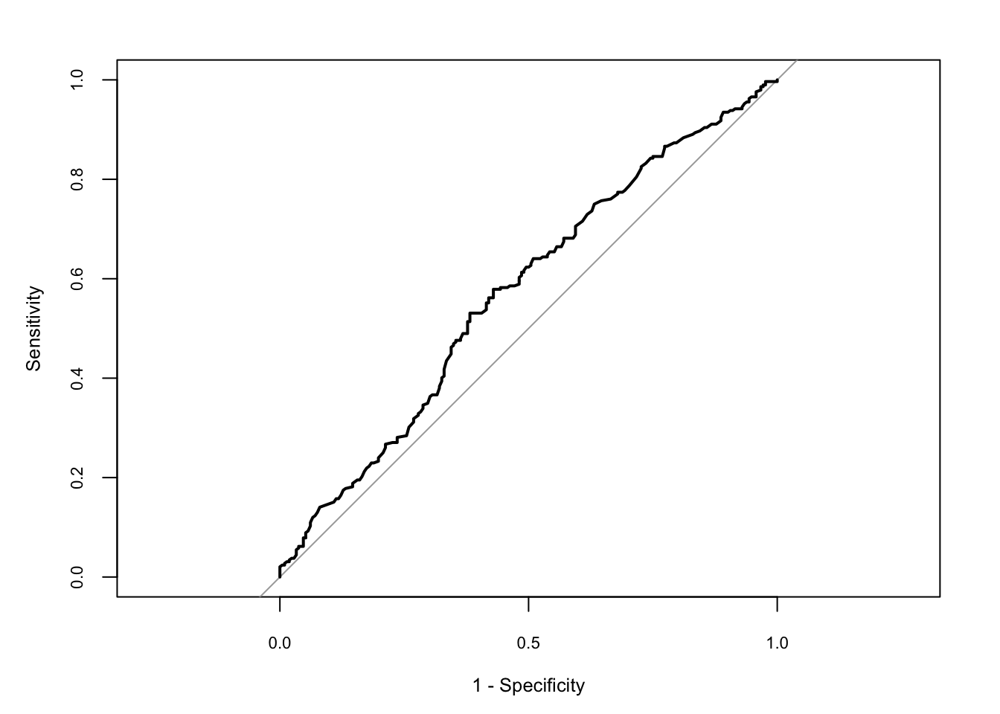
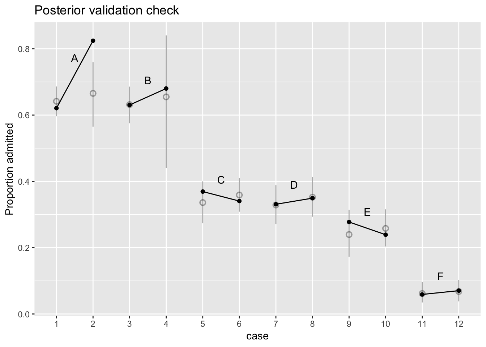
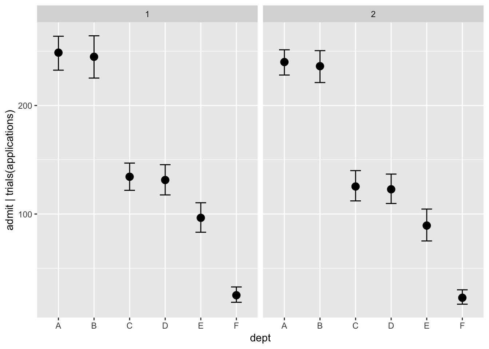
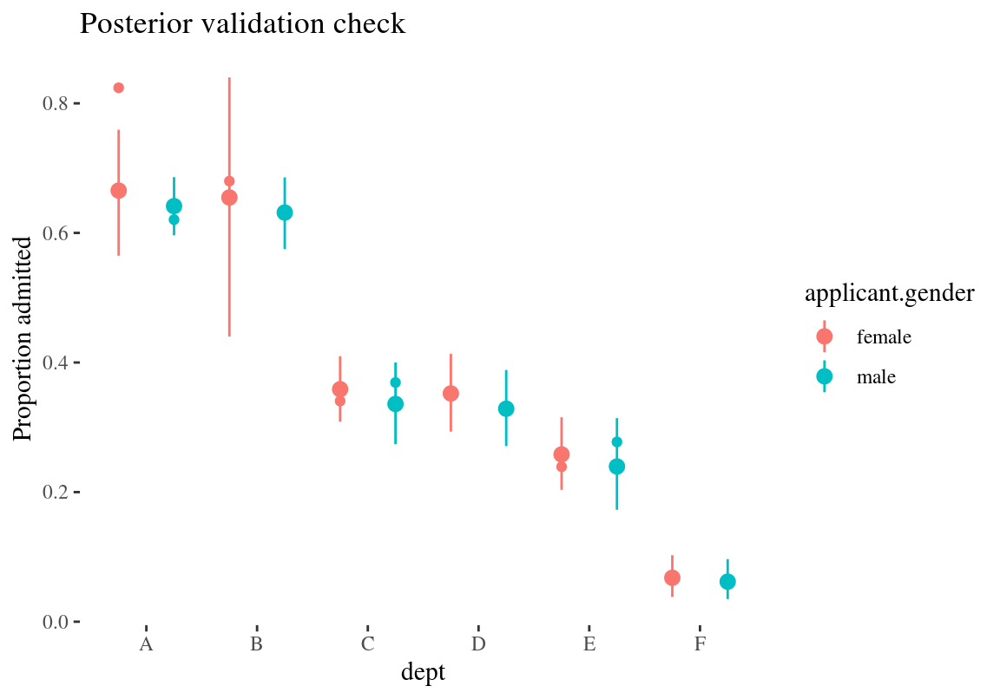

2 Brms mudelid
2.1 Robustne lineaarne regressioon
Kasutame dnorm likelihoodi asemel studenti t jaotust. Selle jaotuse õlad on reguleeritavalt kõrgemad ja nende alla mahuvad paremini outlierid. Õlgade kõrgust reguleerib parameeter nu (1 - Inf), mille väiksemad väärtused (alla 10) annavad laiad õlad ja kaitse outlierite vastu. Me anname nu-le gamma priori. Sellel prioril on omakorda 2 parameetrit, shape ja scale Kui fikseerime shape = 4 ja scale = 1, siis saame kitsa priori, mis eelistab nu väärtusi, mis soosivad laiu õlgu ja robustset regressiooni.
x = seq(from = 0, to = 20, by = .1)
y = dgamma(x, shape= 4, scale = 1)
plot(y~x)
get_prior(Sepal.Length~Petal.Length,
data= iris,
family = "student")## prior class coef group resp dpar nlpar bound
## 1 student_t(3, 6, 10) Intercept
## 2 b
## 3 b Petal.Length
## 4 gamma(2, 0.1) nu
## 5 student_t(3, 0, 10) sigmaprior <- c(prior(gamma(4,1), class="nu"))robust_m1 on studenti likelihoodiga, mille õlad määratakse adaptiivselt andmete poolt. robust_m2-s anname õlgade laiuse ette ja robust_m3 on mitte-robustne kontroll tavalise normaalse likelihoodiga.
robust_m1 <- brm(Sepal.Length~Petal.Length,
data= iris,
family = "student",
prior = prior,
chains = 3,
cores = 3)
robust_m2 <- brm(
data= iris,
family = student,
bf(Sepal.Length~Petal.Length, nu = 4),
prior = c(prior(normal(0, 100), class = Intercept),
prior(normal(0, 10), class = b),
prior(student_t(5, 0, 5), class = sigma)),
chains = 3,
cores = 3)
robust_m3 <- brm(Sepal.Length~Petal.Length,
data= iris,
family = "gaussian",
chains = 3,
cores = 3)
write_rds(robust_m1, path = "robust_m1.fit")
write_rds(robust_m2, path = "robust_m2.fit")
write_rds(robust_m3, path = "robust_m3.fit")b_estimates <- bind_rows(tidy(robust_m1),
tidy(robust_m2),
tidy(robust_m3), .id= "model_nr")
b1 <- b_estimates %>% filter(str_detect(term, "b_P") ) %>%
ggplot(aes(model_nr, estimate))+
geom_pointrange(aes(ymin=lower, ymax=upper))+
coord_flip()+ labs(x="Model nr", title ="slopes")
b2 <- b_estimates %>% filter(str_detect(term, "b_I") ) %>%
ggplot(aes(model_nr, estimate))+
geom_pointrange(aes(ymin=lower, ymax=upper))+
coord_flip()+ labs(x=NULL, title ="intercepts")
gridExtra::grid.arrange(b1, b2, nrow = 1)
Kolme mudeli interceptid ja sloped on sisuliselt võrdsed ja sama täpsusega hinnatud. Seega ei tee robustne mudel vähemal halba, kui meil on enam-vähem normaalsed andmed.
Proovime ka robuststet versiooni 2 grupi võrdlusest (vastab t testile, kus kahe grupi sd-d hinnatakse eraldi)
ir1 <- iris %>% filter(Species != "versicolor")
ir1$Species <- as.factor(ir1$Species) %>% fct_drop() get_prior(bf(Sepal.Length~Species, sigma ~ Species),
data = ir1, family = "student")## prior class coef group resp dpar nlpar
## 1 student_t(3, 6, 10) Intercept
## 2 b
## 3 b Speciesvirginica
## 4 gamma(2, 0.1) nu
## 5 student_t(3, 0, 10) Intercept sigma
## 6 b sigma
## 7 b Speciesvirginica sigma
## bound
## 1
## 2
## 3
## 4
## 5
## 6
## 7prior <- c(prior(gamma(4,1), class= "nu"),
prior(normal(0, 4), class= "b"))robust_t_test1 <- brm(bf(Sepal.Length~Species, sigma ~ Species),
data = ir1, prior = prior, family = "student")
write_rds(robust_t_test1, path = "robust_t_test1.fit")tidy(robust_t_test1)## term estimate std.error lower upper
## 1 b_Intercept 5.0020068 0.05049031 4.9163400 5.0855873
## 2 b_sigma_Intercept -1.1753205 0.12805105 -1.3832433 -0.9696681
## 3 b_Speciesvirginica 1.5568893 0.10322574 1.3867798 1.7259623
## 4 b_sigma_Speciesvirginica 0.5770388 0.16941731 0.2978824 0.8458788
## 5 nu 6.1131274 2.03341301 3.3366838 9.8740335
## 6 lp__ -79.9911055 1.57662083 -82.9540556 -78.0629394b_Intercept on hinnang 1. grupi keskväärtusele (algses skaalas)
b_Speciesvirginica on hinnag efekti suurusele, ehk 2. grupi erinevusest esimesest grupist (algses skaalas)
b_Intercept + b_Speciesvirginica annab 2. grupi keskväärtuse.
b_sigma_Intercept on naturaallogaritm 1. grupi sd-st.
b_sigma_Speciesvirginica on logaritm 2. grupi (I. virginica) sd erinevusest esimesest grupist (ehk efekti suurus).
Seega saab algses skaalas sd-d nii:
exp(b_sigma_Intercept) = 1. grupi sd
exp(b_sigma_Intercept) + exp(b_sigma_Speciesvirginica) = 2. grupi sd
exp(b_sigma_Speciesvirginica) = sd-de erinevus
Nii arvutame 2. grupi keskväärtuse posteeriori
r_1_df <- posterior_samples(robust_t_test1)
mean_2.gr <- r_1_df$b_Intercept + r_1_df$b_Speciesvirginica
ggplot(data = NULL) + geom_density(aes(mean_2.gr))
Nii saab tekitada usaldusinetvalle, mis katavad 90% jaotuse alusest kõrgeimast tihedusest (mis ei ole päris sama, mis kvantiilide meetod)
rethinking::HPDI(mean_2.gr, prob = 0.9)## |0.9 0.9|
## 6.400949 6.696477Nii saame teada, milline osa (fraktsioon) posteeriorist on väiksem kui 6.4
mean(mean_2.gr < 6.4)## [1] 0.03725Asendades eelnevas koodis 6.4 nulliga saame bayesi versiooni ühepoolsest p väärtusest hüpoteesile, et teise grupi keskväärtus on null.
Avaldame posteeriori 2. grupi sd-e
sd_2.gr <- exp(r_1_df$b_sigma_Intercept) + exp(r_1_df$b_sigma_Speciesvirginica)
ggplot(data = NULL) + geom_density(aes(sd_2.gr))
On tavaline, et sd-de posteeriorid ei ole normaaljaotusega (selle kohta vaata lähemalt Statistical Rethinking raamatust).
t.test(Sepal.Length~Species, data=ir1)##
## Welch Two Sample t-test
##
## data: Sepal.Length by Species
## t = -15.386, df = 76.516, p-value < 2.2e-16
## alternative hypothesis: true difference in means is not equal to 0
## 95 percent confidence interval:
## -1.78676 -1.37724
## sample estimates:
## mean in group setosa mean in group virginica
## 5.006 6.588Klassikalise t testi efekti suuruse CI on 1.38 … 1.79 robustse t testi oma on 1.39 … 1.73
Simuleerime siis ühe tõsiste outlieritega andmestiku, et vaadata kas meil õnnestub päästa efekt statistilise mitteolulisuse õnnetust saatusest. Meil on a grupis 30 andmepunkti normaaljaotusest mu = 0, sd = 1 ja b grupis 25 andmepunkti normaaljaotusest mu = 1, sd = 1.5, pluss 5 andmepunkti, mis mängivad outliereid.
set.seed(123)
df1 <- tibble(a=rnorm(30), b= c(rnorm(25, 1, 1.5), 4.3, 5.3, 7, -8.1, -17)) %>% gather()
ggplot(df1, aes(value, fill=key)) + geom_histogram(alpha = 0.7, position = "identity")## `stat_bin()` using `bins = 30`. Pick better value with `binwidth`.
robust_t_test2 <- brm(bf(value~key, sigma ~ key),
data = df1, family = "student", prior= prior(gamma(4,1), class= "nu"))
write_rds(robust_t_test2, path = "robust_t_test2.fit")tidy(robust_t_test2)## term estimate std.error lower upper
## 1 b_Intercept -0.09609489 0.1880097 -0.4099911 0.20486729
## 2 b_sigma_Intercept -0.23716375 0.1917171 -0.5572917 0.06887159
## 3 b_keyb 1.43397804 0.4054630 0.7764347 2.09787765
## 4 b_sigma_keyb 0.63121884 0.2869976 0.1642861 1.09790025
## 5 nu 2.80964925 0.9516335 1.5845346 4.60580795
## 6 lp__ -124.58345960 1.7178287 -128.0055584 -122.52800260t.test(value~key, data=df1)##
## Welch Two Sample t-test
##
## data: value by key
## t = -1.0459, df = 32.184, p-value = 0.3034
## alternative hypothesis: true difference in means is not equal to 0
## 95 percent confidence interval:
## -2.4165681 0.7765583
## sample estimates:
## mean in group a mean in group b
## -0.04710376 0.77290114Nüüd kus meil on outlieritega andmed, annab klassikaline t test efekti suurusele CI -2.41 … 0.78 (p = 0.3), aga robustne t test leiab efekti üles - CI 0.78 … 2.10 [tegelik ES oleks 1, outliereid arvestamata].
Kui tavaline t test annab välja kahe grupi keskmised, usaldusintervalli nende erinevusele (ehk ES-le) ja p väärtuse, siis bayesi variant annab välja 2 grupi keskväärtused, 2 grupi varieeruvused andmepunktide tasemel ning kõik efekti suurused ja hüpoteesitestid, millest te suudate unistada. Selle külluse põhjus on, et hinnang iga parameeteri väärtusele tuleb meile posteeriori ehk tõenäosusjaotuse kujul. Kuna iga posteerior on meil arvutis olemas kui arvuline vektor, ja teatavasti saab vektoritega teha aritmeetilisi tehteid, siis saab ka posteerioreid omavahel liita, lahutada, astendada jms. Teoreetiliselt sisaldab posteerior kogu infot, mis meil vastava parameetri väärtuse kohta on. Me ei vaja midagi enamat, et teha kõiki järeldusi, mida me selle parameetri väärtuse kohta üldse teha saame. Seetõttu on bayesi versioon mitte ainult palju paindlikum kui tavaline t test, vaid selle output on ka hästi palju informatiivsem.
Igaks juhuks tuletame meelde, et tavaline t test (küll versioonis, kus võrreldavate gruppide varieeruvused on eeldatud olema identsed) on ekvivalentne lineaarse regressiooniga, mille siin fitime vähimruutude meetodiga. (Väheinformatiivsete prioritega bayesi versioon normaaljaotuse likelihoodiga annaks sellega väga sarnase fiti.)
lm1 <- lm(value~key, data=df1)
tidy(lm1)## # A tibble: 2 x 5
## term estimate std.error statistic p.value
## <chr> <dbl> <dbl> <dbl> <dbl>
## 1 (Intercept) -0.0471 0.554 -0.0850 0.933
## 2 keyb 0.820 0.784 1.05 0.300p = 0.2999252 ongi vastava t testi põhiväljund.
2.1.1 puuduvate andmete imputatsioon
Regressioonimudelite fittimisel kasutatakse ainult vaatlusi, kus esinevad väärtused kõigis mudelisse pandud muutujates. Seega, kui meil on palju muutujaid, milles igaühes puuduvad juhuslikult mõned väärtused, siis kaotame kokkuvõttes enamuse oma valimist. Aitab puuduvate andmete imputatsioon, mis tegelikult tähendab, et me fitime iga puuduvaid andmeid sisaldava muutuja eraldi regressioonimudelis kõigi teiste muutujate vastu.
Eriti vajalik, kui andmed ei puudu juhuslikult!
Viskame irise andmestiku kahest tulbast välja 1/4 andmepunkte, aga mitte juhuslikult vaid kõik madalamad väärtused. Selline suunatud tegevus kallutab (ehk suunab kindlas suunas) oluliselt mudeldamise tulemusi
iris_na <- iris
quantile(iris_na$Petal.Length)## 0% 25% 50% 75% 100%
## 1.00 1.60 4.35 5.10 6.90iris_na$Sepal.Length[iris_na$Sepal.Length < 5] <- NA
iris_na$Petal.Length[iris_na$Petal.Length < 1.6] <- NAlm(iris$Petal.Length~iris$Sepal.Length) %>% tidy()## # A tibble: 2 x 5
## term estimate std.error statistic p.value
## <chr> <dbl> <dbl> <dbl> <dbl>
## 1 (Intercept) -7.10 0.507 -14.0 6.13e-29
## 2 iris$Sepal.Length 1.86 0.0859 21.6 1.04e-47lm(iris_na$Petal.Length~iris_na$Sepal.Length) %>% tidy()## # A tibble: 2 x 5
## term estimate std.error statistic p.value
## <chr> <dbl> <dbl> <dbl> <dbl>
## 1 (Intercept) -4.19 0.609 -6.89 4.33e-10
## 2 iris_na$Sepal.Length 1.43 0.0976 14.6 4.53e-27imputeerime enne mudeli fittimist kasutades multiple imputation meetodit mice paketist. Siin imputeerime iga puuduva väärtuse kasutades kõigi teiste parameetrite väärtusi, ja me teeme seda 5 korda.
library(mice)
imp <- mice(iris_na, m = 5, print = FALSE)Meil on nüüd 5 imputeeritud andmesetti. Me saadame need kõik brms-i.
Siin kasutame mice() tema vaikeväärtustel, kuid mice pakett on tegelikult vägagi rikkalik imputatsioonimasin, mille helpi ja tutoorialeid tuleks kindlasti enne lugeda, kui oma andmeid imputeerima asuda. Lisaks, see raamat on tervenisti pühendatud imputatsioonile: https://stefvanbuuren.name/fimd/
iris_imp1 <- brm_multiple(Petal.Length~Sepal.Length, data = imp)
write_rds(iris_imp1, path = "iris_imp1.fit")Saame tavalise fitiobjekti, kus on 5 alammudeli posterioorid. Kõik juba koos.
tidy(iris_imp1)[1:2,]## term estimate std.error lower upper
## 1 b_Intercept -7.692034 0.55428281 -8.599265 -6.790636
## 2 b_Sepal.Length 1.948280 0.09293763 1.796668 2.099831Tõepoolest, süstemaatiliselt rikutud andmetest on imutatsiooni abil võimalik täitsa head ennustust tagasi saada!!!
2.2 imputatsioon otse brms-is
See töötab küll irise peal halvemini kui mice!
bform <- bf(Petal.Length | mi() ~ mi(Sepal.Length)) +
bf(Sepal.Length | mi() ~ Sepal.Width + Petal.Width + Species + mi(Petal.Length)) + set_rescor(FALSE)
iris_imp2 <- brm(bform, data = iris_na)
write_rds(iris_imp2, path = "iris_imp2.fit")bform <- bf(Petal.Length | mi() ~ mi(Sepal.Length)) +
bf(Sepal.Length | mi() ~ Species) + set_rescor(FALSE)
iris_imp3 <- brm(bform, data = iris_na)
write_rds(iris_imp3, path = "iris_imp3.fit")tidy(iris_imp2)## term estimate std.error lower
## 1 b_PetalLength_Intercept -5.5689751 4.916614e-01 -6.2043923
## 2 b_SepalLength_Intercept 2.6008323 3.255017e-01 2.1146496
## 3 b_SepalLength_Sepal.Width 0.3073513 8.550384e-02 0.1636517
## 4 b_SepalLength_Petal.Width 0.0679416 1.515490e-01 -0.1302599
## 5 b_SepalLength_Speciesversicolor -0.2201413 1.594910e-01 -0.4822360
## 6 b_SepalLength_Speciesvirginica -0.4502161 2.318672e-01 -0.8562267
## 7 bsp_PetalLength_miSepal.Length 1.6354621 8.258695e-02 1.5089083
## 8 bsp_SepalLength_miPetal.Length 0.6130185 3.131077e-02 0.5758295
## 9 sigma_PetalLength 0.6527263 4.036947e-02 0.5987180
## 10 sigma_SepalLength 0.3324690 1.354175e-02 0.3091020
## 11 Ymi_PetalLength[1] 2.5170608 3.466306e-01 2.0061580
## 12 Ymi_PetalLength[2] -432.9218395 1.389462e+03 -3058.9123696
## 13 Ymi_PetalLength[3] -996.6434469 1.424161e+03 -4056.1035554
## 14 Ymi_PetalLength[4] 1510.4882479 1.419027e+03 -295.1643721
## 15 Ymi_PetalLength[5] 2.2170549 3.652830e-01 1.6579465
## 16 Ymi_PetalLength[7] 4136.6839655 5.314535e+03 -1684.5964107
## 17 Ymi_PetalLength[8] 2.1673940 3.666670e-01 1.6726863
## 18 Ymi_PetalLength[9] 172.4278473 8.987641e+02 -963.0600308
## 19 Ymi_PetalLength[10] 1157.3398337 9.741248e+02 -503.2538359
## 20 Ymi_PetalLength[11] 3.2049694 3.118370e-01 2.6894988
## 21 Ymi_PetalLength[13] 571.3847889 1.114560e+03 -644.2250181
## 22 Ymi_PetalLength[14] 265.7601083 6.341996e+02 -440.2222791
## 23 Ymi_PetalLength[15] 3.3153255 3.902616e-01 2.6811560
## 24 Ymi_PetalLength[16] 3.0417922 4.402912e-01 2.2160176
## 25 Ymi_PetalLength[17] 3.0306791 3.644499e-01 2.5663397
## 26 Ymi_PetalLength[18] 2.5185282 3.973026e-01 1.7816344
## 27 Ymi_PetalLength[20] 2.2724810 4.034823e-01 1.5303176
## 28 Ymi_PetalLength[22] 2.4953377 3.960341e-01 1.8904294
## 29 Ymi_PetalLength[23] -153.9355615 2.052157e+03 -3859.6514297
## 30 Ymi_PetalLength[28] 2.7133937 4.400982e-01 2.0140469
## 31 Ymi_PetalLength[29] 2.7002576 4.453780e-01 1.9887781
## 32 Ymi_PetalLength[32] 2.9400459 3.627444e-01 2.3790961
## 33 Ymi_PetalLength[33] 2.5131978 4.261122e-01 1.8471412
## 34 Ymi_PetalLength[34] 2.8653465 3.275925e-01 2.3745726
## 35 Ymi_PetalLength[35] 315.7271884 1.309276e+03 -1101.4280344
## 36 Ymi_PetalLength[36] 2.5777107 3.372691e-01 1.9757329
## 37 Ymi_PetalLength[37] 3.2111873 3.878201e-01 2.5743860
## 38 Ymi_PetalLength[38] -113.1556628 5.452254e+02 -1429.3585204
## 39 Ymi_PetalLength[39] -122.0110334 1.866443e+03 -4121.9888827
## 40 Ymi_PetalLength[40] 2.5489661 3.245525e-01 2.0305577
## 41 Ymi_PetalLength[41] 2.3217079 4.258884e-01 1.6500998
## 42 Ymi_PetalLength[42] -10.1840126 2.218375e+02 -311.4543863
## 43 Ymi_PetalLength[43] -847.8219111 1.131409e+03 -2960.0300196
## 44 Ymi_PetalLength[46] -163.4421394 7.828682e+02 -1370.4870810
## 45 Ymi_PetalLength[48] 2292.4103757 5.656979e+03 -4695.6430646
## 46 Ymi_PetalLength[49] 2.5763952 4.469140e-01 1.8623144
## 47 Ymi_PetalLength[50] 2.4020421 3.814271e-01 1.6865691
## 48 Ymi_SepalLength[2] -266.8168163 8.703179e+02 -1892.6620638
## 49 Ymi_SepalLength[3] -639.3507283 9.368423e+02 -2636.0288687
## 50 Ymi_SepalLength[4] 964.9305974 9.081089e+02 -167.1477306
## 51 Ymi_SepalLength[7] 2470.0979396 3.134750e+03 -1050.8943263
## 52 Ymi_SepalLength[9] 97.2306337 5.316389e+02 -621.2858189
## 53 Ymi_SepalLength[10] 701.1611438 5.827009e+02 -313.6865681
## 54 Ymi_SepalLength[12] 4.5949675 2.953437e-01 4.2243624
## 55 Ymi_SepalLength[13] 366.2949141 7.127550e+02 -394.8187890
## 56 Ymi_SepalLength[14] 156.5419592 3.771478e+02 -271.8281961
## 57 Ymi_SepalLength[23] -54.1831108 1.237198e+03 -2232.9116804
## 58 Ymi_SepalLength[25] 4.7323231 1.662626e-01 4.4736831
## 59 Ymi_SepalLength[30] 4.5204520 2.994778e-01 4.0400157
## 60 Ymi_SepalLength[31] 4.5043262 2.078795e-01 4.1570796
## 61 Ymi_SepalLength[35] 193.4707743 7.731571e+02 -637.0457550
## 62 Ymi_SepalLength[38] -71.5785003 3.472256e+02 -922.8427996
## 63 Ymi_SepalLength[39] -55.9219896 1.180908e+03 -2591.6470638
## 64 Ymi_SepalLength[42] -1.2192674 1.369150e+02 -182.0446409
## 65 Ymi_SepalLength[43] -523.7230898 6.993128e+02 -1866.2470709
## 66 Ymi_SepalLength[46] -104.9237918 4.794613e+02 -856.1161046
## 67 Ymi_SepalLength[48] 1271.7510484 3.349937e+03 -2938.3937342
## 68 Ymi_SepalLength[58] 5.1606585 2.744736e-01 4.6435868
## 69 Ymi_SepalLength[107] 6.0507199 2.044480e-01 5.7758375
## 70 lp__ -213.4054310 5.314698e+00 -222.7841579
## upper
## 1 -4.812863e+00
## 2 3.124612e+00
## 3 4.296600e-01
## 4 3.329606e-01
## 5 1.717628e-02
## 6 -9.367050e-02
## 7 1.736723e+00
## 8 6.627341e-01
## 9 7.216713e-01
## 10 3.529544e-01
## 11 3.077299e+00
## 12 8.544928e+02
## 13 1.162931e+02
## 14 3.591857e+03
## 15 2.780137e+00
## 16 1.408007e+04
## 17 2.774636e+00
## 18 2.209843e+03
## 19 2.818054e+03
## 20 3.672974e+00
## 21 2.812977e+03
## 22 1.470613e+03
## 23 3.934609e+00
## 24 3.690646e+00
## 25 3.737488e+00
## 26 3.117038e+00
## 27 2.858220e+00
## 28 3.128283e+00
## 29 2.089776e+03
## 30 3.392726e+00
## 31 3.483117e+00
## 32 3.577408e+00
## 33 3.276982e+00
## 34 3.408321e+00
## 35 2.837888e+03
## 36 3.080168e+00
## 37 3.799843e+00
## 38 5.011506e+02
## 39 2.673766e+03
## 40 3.049540e+00
## 41 3.076983e+00
## 42 4.231516e+02
## 43 6.471466e+02
## 44 9.387067e+02
## 45 1.196614e+04
## 46 3.289538e+00
## 47 2.970706e+00
## 48 5.629996e+02
## 49 7.142049e+01
## 50 2.283074e+03
## 51 8.241670e+03
## 52 1.291254e+03
## 53 1.645646e+03
## 54 5.171037e+00
## 55 1.829025e+03
## 56 8.585031e+02
## 57 1.365397e+03
## 58 5.050855e+00
## 59 4.953575e+00
## 60 4.851128e+00
## 61 1.684955e+03
## 62 3.010055e+02
## 63 1.743403e+03
## 64 2.661434e+02
## 65 3.835284e+02
## 66 5.465296e+02
## 67 6.936049e+03
## 68 5.602017e+00
## 69 6.402160e+00
## 70 -2.050506e+02tidy(iris_imp3)## term estimate std.error lower
## 1 b_PetalLength_Intercept -4.6011422 0.58642627 -5.5603660
## 2 b_SepalLength_Intercept 5.1680100 0.09148933 5.0143264
## 3 b_SepalLength_Speciesversicolor 0.7809822 0.11573409 0.5903730
## 4 b_SepalLength_Speciesvirginica 1.4494074 0.11550544 1.2587559
## 5 bsp_PetalLength_miSepal.Length 1.4881584 0.09447771 1.3334928
## 6 sigma_PetalLength 0.7053926 0.04935572 0.6297299
## 7 sigma_SepalLength 0.5025168 0.03248307 0.4534476
## 8 Ymi_PetalLength[1] 2.9982798 0.70749107 1.8870777
## 9 Ymi_PetalLength[2] 3.0738932 1.04140116 1.3437906
## 10 Ymi_PetalLength[3] 3.1100340 1.03494829 1.4007143
## 11 Ymi_PetalLength[4] 3.1082465 1.06490193 1.3430536
## 12 Ymi_PetalLength[5] 2.8334923 0.69714243 1.6896642
## 13 Ymi_PetalLength[7] 3.1013883 1.02992398 1.4325013
## 14 Ymi_PetalLength[8] 2.8303987 0.70941362 1.6683849
## 15 Ymi_PetalLength[9] 3.1064728 1.05442625 1.3346861
## 16 Ymi_PetalLength[10] 3.1196433 1.04614620 1.4024379
## 17 Ymi_PetalLength[11] 3.4521689 0.69264546 2.3405836
## 18 Ymi_PetalLength[13] 3.0984333 1.05157577 1.3458346
## 19 Ymi_PetalLength[14] 3.0789418 1.04395013 1.4198088
## 20 Ymi_PetalLength[15] 4.0284667 0.70329661 2.8730409
## 21 Ymi_PetalLength[16] 3.8763241 0.71406410 2.6927891
## 22 Ymi_PetalLength[17] 3.4392466 0.70040721 2.2692571
## 23 Ymi_PetalLength[18] 2.9765847 0.71849426 1.7776724
## 24 Ymi_PetalLength[20] 2.9718616 0.70624090 1.8040344
## 25 Ymi_PetalLength[22] 2.9795098 0.70712142 1.8527605
## 26 Ymi_PetalLength[23] 3.0832934 1.04049536 1.3846976
## 27 Ymi_PetalLength[28] 3.1496919 0.71816359 1.9700353
## 28 Ymi_PetalLength[29] 3.1374871 0.71182125 1.9545623
## 29 Ymi_PetalLength[32] 3.4380551 0.71530049 2.2501332
## 30 Ymi_PetalLength[33] 3.1352268 0.73167018 1.9491126
## 31 Ymi_PetalLength[34] 3.5850113 0.70201526 2.4095032
## 32 Ymi_PetalLength[35] 3.0945285 1.04252871 1.3542401
## 33 Ymi_PetalLength[36] 2.8429788 0.73169293 1.6665296
## 34 Ymi_PetalLength[37] 3.5822866 0.72490042 2.3820340
## 35 Ymi_PetalLength[38] 3.0784563 1.05059775 1.3107530
## 36 Ymi_PetalLength[39] 3.0880603 1.06176924 1.3331166
## 37 Ymi_PetalLength[40] 2.9893030 0.71598609 1.7838994
## 38 Ymi_PetalLength[41] 2.8516940 0.71595349 1.6620801
## 39 Ymi_PetalLength[42] 3.0920172 1.03022936 1.3845385
## 40 Ymi_PetalLength[43] 3.1017430 1.03972685 1.4013211
## 41 Ymi_PetalLength[46] 3.1260024 1.03815786 1.4158691
## 42 Ymi_PetalLength[48] 3.1281518 1.02119322 1.4653545
## 43 Ymi_PetalLength[49] 3.2782139 0.72621996 2.0723413
## 44 Ymi_PetalLength[50] 2.8245689 0.72840822 1.5979819
## 45 Ymi_SepalLength[2] 5.1688224 0.51240503 4.3424882
## 46 Ymi_SepalLength[3] 5.1746266 0.51001074 4.3059171
## 47 Ymi_SepalLength[4] 5.1808052 0.51128519 4.3535546
## 48 Ymi_SepalLength[7] 5.1723792 0.49760909 4.3595823
## 49 Ymi_SepalLength[9] 5.1749942 0.50840071 4.3397068
## 50 Ymi_SepalLength[10] 5.1824993 0.50937978 4.3365366
## 51 Ymi_SepalLength[12] 4.6431708 0.34940111 4.0529005
## 52 Ymi_SepalLength[13] 5.1642979 0.51107735 4.3245002
## 53 Ymi_SepalLength[14] 5.1632065 0.51754900 4.3235863
## 54 Ymi_SepalLength[23] 5.1582515 0.51136013 4.3294199
## 55 Ymi_SepalLength[25] 4.7412613 0.34946379 4.1609039
## 56 Ymi_SepalLength[30] 4.6429914 0.34977668 4.0801187
## 57 Ymi_SepalLength[31] 4.6422514 0.35635141 4.0561534
## 58 Ymi_SepalLength[35] 5.1700899 0.51003001 4.3360958
## 59 Ymi_SepalLength[38] 5.1769006 0.51121000 4.3278199
## 60 Ymi_SepalLength[39] 5.1673076 0.51209797 4.3347342
## 61 Ymi_SepalLength[42] 5.1711488 0.50684161 4.3278646
## 62 Ymi_SepalLength[43] 5.1792622 0.51372025 4.3106532
## 63 Ymi_SepalLength[46] 5.1737080 0.51014496 4.3385966
## 64 Ymi_SepalLength[48] 5.1780371 0.49868089 4.3491099
## 65 Ymi_SepalLength[58] 5.6150008 0.34171563 5.0584729
## 66 Ymi_SepalLength[107] 6.3570714 0.35414970 5.7788325
## 67 lp__ -281.8625946 6.60332002 -293.5252705
## upper
## 1 -3.6498716
## 2 5.3161878
## 3 0.9707784
## 4 1.6448384
## 5 1.6424317
## 6 0.7905259
## 7 0.5588137
## 8 4.1873531
## 9 4.8063779
## 10 4.8369395
## 11 4.8815598
## 12 3.9868619
## 13 4.8322189
## 14 3.9864219
## 15 4.8087793
## 16 4.8819548
## 17 4.5816576
## 18 4.7740373
## 19 4.7964474
## 20 5.1925171
## 21 5.0805618
## 22 4.5849583
## 23 4.1522420
## 24 4.1406601
## 25 4.1160164
## 26 4.8136809
## 27 4.3187065
## 28 4.3224309
## 29 4.5941487
## 30 4.3352840
## 31 4.7425524
## 32 4.8007986
## 33 4.0491878
## 34 4.7715945
## 35 4.7627605
## 36 4.7935239
## 37 4.1715646
## 38 4.0312857
## 39 4.7797534
## 40 4.7915747
## 41 4.8440033
## 42 4.8205718
## 43 4.4523291
## 44 4.0121128
## 45 6.0158152
## 46 5.9847760
## 47 6.0236319
## 48 5.9894530
## 49 6.0018101
## 50 5.9876896
## 51 5.2083600
## 52 5.9837172
## 53 6.0144569
## 54 5.9894243
## 55 5.3105382
## 56 5.2233699
## 57 5.2227001
## 58 6.0090034
## 59 6.0065088
## 60 6.0091232
## 61 5.9824657
## 62 6.0176877
## 63 6.0066738
## 64 5.9817752
## 65 6.1683184
## 66 6.9297331
## 67 -271.70941602.2.1 binoomjaotusega mudelid
y ∼ Binomial(n,p)
where y is some count variable, n is the number of trials, and p is the probability a given trial was a 1, which is sometimes termed a success.
When n = 1, then y is a vector of 0s and 1s. Presuming the logit link, models of this type are commonly termed logistic regression.
When n > 1, and still presuming the logit link, we might call our model an aggregated logistic regression model, or more generally an aggregated binomial regression model.
2.2.2 logistic regression
library(rethinking)## Loading required package: rstan## Loading required package: StanHeaders## rstan (Version 2.17.3, GitRev: 2e1f913d3ca3)## For execution on a local, multicore CPU with excess RAM we recommend calling
## options(mc.cores = parallel::detectCores()).
## To avoid recompilation of unchanged Stan programs, we recommend calling
## rstan_options(auto_write = TRUE)##
## Attaching package: 'rstan'## The following object is masked from 'package:tidyr':
##
## extract## Loading required package: parallel## rethinking (Version 1.59)##
## Attaching package: 'rethinking'## The following objects are masked from 'package:brms':
##
## LOO, WAIC, stancode## The following object is masked from 'package:purrr':
##
## mapdata(chimpanzees)
d <- chimpanzees
head(d)## actor recipient condition block trial prosoc_left chose_prosoc
## 1 1 NA 0 1 2 0 1
## 2 1 NA 0 1 4 0 0
## 3 1 NA 0 1 6 1 0
## 4 1 NA 0 1 8 0 1
## 5 1 NA 0 1 10 1 1
## 6 1 NA 0 1 12 1 1
## pulled_left
## 1 0
## 2 1
## 3 0
## 4 0
## 5 1
## 6 1- intercept only model
m_logreg_1 <-
brm(data = d, family = binomial,
pulled_left ~ 1,
prior(normal(0, 10), class = Intercept))
write_rds(m_logreg_1, path= "m_logreg_1.fit")m_logreg_1 <- read_rds("m_logreg_1.fit")tidy(m_logreg_1)## term estimate std.error lower upper
## 1 b_Intercept 0.3229989 0.08815701 0.180684 0.4641893
## 2 lp__ -346.6692033 0.66518291 -347.959467 -346.1939464Tõenäosus, et ahv “pulled left”:
inv_logit_scaled(fixef(m_logreg_1))## Estimate Est.Error Q2.5 Q97.5
## Intercept 0.5800549 0.522025 0.5386246 0.6211881Nüüd ehtne ennustav logistiline regressioonimudel
m_logreg_2 <-
brm(data = d, family = binomial,
pulled_left ~ 1 + prosoc_left,
prior = c(prior(normal(0, 10), class = Intercept),
prior(normal(0, 10), class = b)))
write_rds(m_logreg_2, path= "m_logreg_2.fit")m_logreg_2 <-read_rds("m_logreg_2.fit")tidy(m_logreg_2)## term estimate std.error lower upper
## 1 b_Intercept 0.04562136 0.1277891 -0.1654294 0.2586237
## 2 b_prosoc_left 0.56590225 0.1870018 0.2597061 0.8785781
## 3 lp__ -345.71023786 1.0144730 -347.6393646 -344.7413692The proportional odds = exp(0.5528), which is the ratio of the probability an event happens to the probability it does not happen (the outcome or y variable).
If changing the predictor prosoc_left from 0 to 1 increases the log-odds of pulling the left-hand lever by 0.55, then there is a proportional increase of exp(0.55) = 1.73 in the odds of pulling the left-hand lever. This means that the odds increase by 73%.
exp(0.55)## [1] 1.733253the actual change in probability will also depend upon the intercept, α, as well as any other predictor variables. Logistic regression induce interactions among all variables. You can think of these interactions as resulting from both ceiling and floor effects: If the intercept is large enough to guarantee a pull, then increasing the odds by 73% isn’t going to make it any more guaranteed. Suppose α = 4. Then the probability of a pull, ignoring everything else, would be inv_logit_scaled(4) = 0.98. Adding in an increase of 0.55 (the estimate for beta) changes this to: inv_logit_scaled(4 + 0.55) = 0.99. That’s a difference, on the absolute scale, of 1%, despite being an 73% increase in proportional odds. Likewise, if the intercept is very negative, then the probability of a pull is almost zero. An increase in odds of 73% may not be enough to get the probability up from the floor.
inv_logit_scaled(0.04562136 + 0.56590225)## [1] 0.6482883Pr of pulling left, if prosoc_left is 1, is 64%.
inv_logit_scaled(0.04562136)## [1] 0.5114034if prosoc_left is 0, it is 51%.
This meagre difference is reflected in the roc curve.
glm.probs <- predict(m_logreg_2, type= "response") %>% as.data.frame()## Using the maximum response value as the number of trials.glm.probs <- glm.probs[,1]
glm.pred <- rep("pulled_right",504)
glm.pred[glm.probs >.5] <- "pulled_left"
table(glm.pred, d$pulled_left) #confusion matrix##
## glm.pred 0 1
## pulled_left 201 282
## pulled_right 11 10library(pROC)## Type 'citation("pROC")' for a citation.##
## Attaching package: 'pROC'## The following objects are masked from 'package:stats':
##
## cov, smooth, varroccurve <- roc(d$pulled_left ~ glm.probs)
plot(roccurve, legacy.axes = TRUE, cex.axis=0.7, cex.lab= 0.8)
Sarnase mudeli saab fittida ka siis, kui n>1 ja meil on igale ahvile countide suhted nr of pull-left/total pulls. Nüüd on meil vaja lisada trials(), kuhu läheb n kas ühe numbrina või muutujana, mis indekseerib sündmuste arvu ehk n-i. Antud juhul on kõikidel ahvidel katsete arv n 18.
d_aggr <- d %>% select(-recipient, -block, -trial, -chose_prosoc) %>%
group_by(actor, condition, prosoc_left) %>%
summarise(x = sum(pulled_left))
m_logreg_3 <-
brm(data = d_aggr, family = binomial, x | trials(18) ~ 1 + prosoc_left)Koefitsendid tulevad samad, mis eelmisel mudelil.
- näide aggregeeritud binoomsetele andmetele
library(rethinking)
data(UCBadmit)
d <- UCBadmit
#teeme dummy variable "male", kodeeritud kui 1 ja 0
d <- d %>% mutate(male = ifelse(applicant.gender == "male", 1, 0))
head(d)## dept applicant.gender admit reject applications male
## 1 A male 512 313 825 1
## 2 A female 89 19 108 0
## 3 B male 353 207 560 1
## 4 B female 17 8 25 0
## 5 C male 120 205 325 1
## 6 C female 202 391 593 0m_ucadmit1 <- brm(data = d, family = binomial,
admit | trials(applications) ~ 1 + male ,
prior = c(prior(normal(0, 10), class = Intercept),
prior(normal(0, 10), class = b)),
iter = 2500, warmup = 500, cores = 2, chains = 2)
write_rds(m_ucadmit1, path = "m_ucadmit1.fit")m_ucadmit1 <- read_rds("m_ucadmit1.fit")tidy(m_ucadmit1)## term estimate std.error lower upper
## 1 b_Intercept -0.8311433 0.05087528 -0.9175040 -0.7478350
## 2 b_male 0.6118988 0.06259961 0.5115236 0.7175192
## 3 lp__ -433.6945826 0.94842267 -435.6207322 -432.7763850exp(0.6102733)## [1] 1.840934mehed saavad suhtelise 84% eelise ülikooli sissesaamisel.
inv_logit_scaled(-0.8311908 + 0.6102733)## [1] 0.4449942Meeskandidaadi tõenäosus sisse saada on 44%.
inv_logit_scaled(-0.8311908)## [1] 0.3033933Naiskandidaadi tõenäosus sisse saada on 30%.
Kui palju erinevad vastuvõtmise tõenäosused (usaldusintervallidega)?
post <- posterior_samples(m_ucadmit1)
post %>% mutate(p_admit_male = inv_logit_scaled(b_Intercept + b_male),
p_admit_female = inv_logit_scaled(b_Intercept),
diff_admit = p_admit_male - p_admit_female) %>%
summarise(`2.5%` = quantile(diff_admit, probs = .025),
`50%` = median(diff_admit),
`97.5%` = quantile(diff_admit, probs = .975))## 2.5% 50% 97.5%
## 1 0.1151054 0.1419908 0.1701467Mudeldame otse küsimust, mis on naiste ja meeste erinevus sissesaamisel. intercepti surume nulli, et saada eraldi hinnang igale departmendile
m_ucadmit2 <- brm(data = d, family = binomial,
admit | trials(applications) ~ 0 + dept + male,
prior(normal(0, 10), class = b),
iter = 2500, warmup = 500, cores = 2, chains = 2)
write_rds(m_ucadmit2, path = "m_ucadmit2.fit")m_ucadmit2 <- read_rds("m_ucadmit2.fit")tidy(m_ucadmit2)## term estimate std.error lower upper
## 1 b_deptA 0.6843315 0.09681624 0.5234405 0.8425816
## 2 b_deptB 0.6409443 0.11570723 0.4529193 0.8312787
## 3 b_deptC -0.5805757 0.07433040 -0.7053562 -0.4593329
## 4 b_deptD -0.6134213 0.08406832 -0.7516535 -0.4775713
## 5 b_deptE -1.0577313 0.09741025 -1.2190853 -0.9005850
## 6 b_deptF -2.6304800 0.15562273 -2.8957175 -2.3911318
## 7 b_male -0.1016603 0.08069820 -0.2324713 0.0367825
## 8 lp__ -70.6296692 1.84324796 -74.0182679 -68.2572310d <- d %>% mutate(case = factor(1:12))
d_text <- d %>% group_by(dept) %>%
summarise(case = mean(as.numeric(case)),
admit = mean(admit / applications) + .05)
predict(m_ucadmit2) %>%
as_tibble() %>%
bind_cols(d) %>%
ggplot(aes(x = case, y = admit / applications)) +
geom_pointrange(aes(y = Estimate / applications,
ymin = Q2.5 / applications,
ymax = Q97.5 / applications),
shape = 1, alpha = 1/3) +
geom_point() +
geom_line(aes(group = dept)) +
geom_text(data = d_text,
aes(y = admit, label = dept)) +
labs(y = "Proportion admitted",
title = "Posterior validation check") 
Ohhoo, kui vaadata deparmente eraldi, pole mingit kinnitust, et meestel oleks paremad võimalused ülikooli sisse saada.
conditions <- data.frame(male = c(0, 1))
marginal_effects(m_ucadmit2, effects="dept", conditions = conditions)## Using the median number of trials by default if not specified otherwise.
2.2.3 y muutujal 3+ kategoorilist väärtust
Building a generalized linear model from a multinomial likelihood is complicated, because as the event types multiply, so too do your modeling choices. And there are two different approaches to constructing the likelihoods, as well. The First is based directly on the multinomial likelihood and uses a generalization of the logit link.
When more than two types of unordered events are possible, and the probability of each type of event is constant across trials, then the maximum entropy distribution is the multinomial distribution. The conventional and natural link is this context is the multinomial logit. This link function takes a vector of scores, one for each K event types, and computed the probability of a particular type of event K.
Estimate the association between person’s family income and which career (there are 3 choiches) he chooses.
library(rethinking)
N <- 100
set.seed(2078)
# simulate family incomes for each individual
family_income <- runif(N)
# assign a unique coefficient for each type of event
b <- (1:-1)
career <- rep(NA, N) # empty vector of choices for each individual
for (i in 1:N) {
score <- 0.5 * (1:3) + b * family_income[i]
p <- softmax(score[1], score[2], score[3])
career[i] <- sample(1:3, size = 1, prob = p)
}mult_logistic_m1 <-
brm(data = list(career = career, family_income = family_income),
family = categorical(link = "logit"),
career ~ 1 + family_income)
write_rds(mult_logistic_m1, path = "mult_logistic_m1.fit")Parameetreid ei saa otse tõlgendada. Selle asemel on mõistlik töötada mudeli ennustuste tasemel konverteerides parameetrid 3ks tõenäosusteks, et inimene kindlal perekonna sissetuleku tasemel valib karjääri 1, 2 või 3.
pred1 <- predict(mult_logistic_m1) %>% as_tibble()
pred1$career <- career
pred1$income <- family_income
pred1_l <- reshape2::melt(pred1, id.vars = 4:5, measure.vars = 1:3)
pred1_l <- pred1_l %>%
mutate(variable = case_when(variable == "P(Y = 1)" ~ "career 1",
variable == "P(Y = 2)" ~ "career 2",
variable == "P(Y = 3)" ~ "career 3"))
ggplot(pred1_l, aes(income, value)) + geom_point()+ facet_wrap(~variable)+
ylab("Pr of career choice at a given income") 
2.2.4 zero inflated mudelid
Kasulikud siis, kui teil on Y-s rohkem nulle kui võiks arvata. Näiteks, kui proovida hinnata, mitu suitsu päevas tõmmatakse andmestikust, mis sisaldab mittesuitsetajaid.
selle mudeli spetsifitseerimiseks pole vaja teha muud, kui õelda brm() argument family = zero_inflated_poisson(), zero_inflated_beta(), _binomial(), _negbinomial().
zinb data: mitu kala turist püüab.
zinb <- read_csv("http://stats.idre.ucla.edu/stat/data/fish.csv")
zinbbrm(count ~ persons + child + camper,
data = zinb, family = zero_inflated_poisson())sellel mudelil on parameeter zi ehk zero inflated probability, mille väärtus annab infleeritud 0-de suhte kõikidesse 0-desse,
järgmiseks püüame veel lisaks ennustada zi väärtust lähtuvalt laste arvust (lastega pered võiks vähem kalastada)
brm(bf(count ~ persons + child + camper,
zi ~ child), data = zinb, family = zero_inflated_poisson())Nüüd on meil parameetrid zi_Intercept ja zi_child
2.2.5 additiivsed distributsioonilised mudelid
inkorporeerime splinid multitaseme mudelisse - siis kui me ei tea y ja x-i suhete kuju.
simuleerime andmed
dat_smooth <- mgcv::gamSim(eg = 6, n = 200, scale = 2, verbose = FALSE)## Gu & Wahba 4 term additive modelhead(dat_smooth[, 1:6])## y x0 x1 x2 x3 f
## 1 4.996243 0.9445432 0.1921298 0.54935405 0.2464679 7.691552
## 2 9.079975 0.1264731 0.1935598 0.05120035 0.9634409 9.040174
## 3 16.631065 0.8066589 0.5084859 0.11441622 0.3963431 17.350130
## 4 19.696796 0.3994394 0.8230999 0.95126304 0.7475927 19.089799
## 5 6.836111 0.3791846 0.3959659 0.86170448 0.6602240 7.337492
## 6 20.266157 0.1233074 0.8261647 0.18456768 0.1965836 20.147487x0 kuni x3 on prediktorid, fac on faktor veerg, mis indikeerib nested andmestruktuuri. me ennustame y väärtusi x0 ja x1 järgi, ja lisaks laseme residuaalse sd varieeruma x0 smoothing termi ja fac gruppide interceptide järgi.
fit_smooth1 <- brm(
bf(y ~ s(x1) + s(x2) + (1|fac), sigma ~ s(x0) + (1|fac)),
data = dat_smooth, family = gaussian()
)2.3 Monotoonilised efektid
näit prediktor muutuja: suitsetab palju - vähe - väga vähe. me ei eelda, et 3 taset oleks üksteisest sama kaugel - ei modelleeri seda pideva muutujana.
fit1 <- brm(y ~ mo(x), data = d)nüüd tekivad meile Simplex parameetrid. Nende prior on kanooniliselt ühe parameetriga (alpha) Dirichlet prior, mis on beta jaotuse multivariaatne üldistus.
siin me eeldame, et kõrvuti kategooriate erinevused on samad - e lähevad sama priori alla. Kui me eeldame, et meil on näit 3 järjestikust monotoonilist taset ja, et madalatel väärtustel (1) on monotoonilise muutuja mõju Y-le suurem, siis anname alphale kõrgema väärtuse. Meie kolemses näites on vaja spetsifitseerida vektor 3 alpha-ga.
prior <- prior(dirichlet(c(2, 1, 1)), class = "...", coef = "...")
fit4 <- brm(y ~ mo(x), data = d,
prior = prior, sample_prior = TRUE)monotooniliste muutujate interaktsiooni mudeldamine
fit5 <- brm(y ~ mo(x)*age, data = d)
marginal_effects(fit5, "x:age")mitmetasemelised monotoonilised mudelid
fit6 <- brm(y ~ mo(x)*age + (mo(x) | city), data = d)2.3.1 multivariaatsed mudelid
mitu y muutujat, millel igaühel on oma prediktorid.
Eurasian blue tit: predict the tarsus length as well as the back color of chicks. Half of the brood were put into another fosternest, while the other half stayed in the fosternest of their own dam. This allows to separate genetic from environmental factors. Additionally, we have information about the hatchdate and sex of the chicks (the latter being known for 94% of the animals).
data("BTdata", package = "MCMCglmm")
head(BTdata)fit1 <- brm(
cbind(tarsus, back) ~ sex + hatchdate + (1|p|fosternest) + (1|q|dam),
data = BTdata, chains = 2, cores = 2
)
add_ic(fit1) <- "loo"
summary(fit1)
pp_check(fit1, resp = "tarsus")
pp_check(fit1, resp = "back")The term (1|p|fosternest) indicates a varying intercept over fosternest. By writing |p| in between we indicate that all varying effects of fosternest should be modeled as correlated. This makes sense since we actually have two model parts, one for tarsus and one for back. The indicator p is arbitrary and can be replaced by other symbols that comes into your mind. Similarily, the term (1|q|dam) indicates correlated varying effects of the genetic mother of the chicks.
The summary output of multivariate models closely resembles those of univariate models, except that the parameters now have the corresponding response variable as prefix. Within dams, tarsus length and back color seem to be negatively correlated, while within fosternests the opposite is true. This indicates differential effects of genetic and environmental factors on these two characteristics. Further, the small residual correlation rescor(tarsus, back) on the bottom of the output indicates that there is little unmodeled dependency between tarsus length and back color. Although not necessary at this point, we have already computed and stored the LOO information criterion of fit1, which we will use for model comparisons.
Me võime anda ette erinevad valemid kummagile y-muutujale nii
bf_tarsus <- bf(tarsus ~ sex + (1|p|fosternest) + (1|q|dam))
bf_back <- bf(back ~ hatchdate + (1|p|fosternest) + (1|q|dam))
fit2 <- brm(bf_tarsus + bf_back, data = BTdata, chains = 2, cores = 2)We change our model in various directions at the same time. Remember the slight left skewness of tarsus, which we will now model by using the skew_normal family instead of the gaussian family. Since we do not have a multivariate normal (or student-t) model, estimating residual correlations is no longer possible. We make this explicit using the set_rescor function. We investigate if the relationship of back and hatchdate is really linear as previously assumed by fitting a non-linear spline of hatchdate. On top of it, we model separate residual variances of tarsus for males and femals chicks.
bf_tarsus <- bf(tarsus ~ sex + (1|p|fosternest) + (1|q|dam)) +
lf(sigma ~ 0 + sex) + skew_normal()
bf_back <- bf(back ~ s(hatchdate) + (1|p|fosternest) + (1|q|dam)) +
gaussian()
fit3 <- brm(bf_tarsus + bf_back + set_rescor(FALSE), data = BTdata)2.3.2 mittelineaarsed mudelid
b <- c(2, 0.75)
x <- rnorm(100)
y <- rnorm(100, mean = b[1] * exp(b[2] * x))
dat1 <- data.frame(x, y)
prior1 <- prior(normal(1, 2), nlpar = "b1") +
prior(normal(0, 2), nlpar = "b2")
fit1 <- brm(bf(y ~ b1 * exp(b2 * x), b1 + b2 ~ 1, nl = TRUE),
data = dat1, prior = prior1)Siin on iga mittelineaarne parameeter (b1 ja b2) eraldi modelleeritud ~1 abil. Argument b1 + b2 ~ 1 (lühivorm: b1 ~ 1, b2 ~ 1) ütleb, mis muutujad valemist on parameetrid, mille väärtust tuleb hinnata. Lisaks spetsifitseerib see igale parameetrile lineaarsed prediktorid. Mitte-lineaarsed parameetrid on tegelikult kohahoidjad lineaarsetele prediktor-termidele. Kuna me siin ei ennusta b1 ja b2 lisaparameetrite kaudu, on meil intercept-only mudel kummagile.
Priors on population-level parameters (i.e., ‘fixed effects’) are often mandatory to identify a non-linear model. Thus, brms requires the user to explicitely specify these priors. In the present example, we used a normal(1, 2) prior on (the population-level intercept of) b1, while we used a normal(0, 2) prior on (the population-level intercept of) b2. Setting priors is a non-trivial task in all kinds of models, especially in non-linear models, so you should always invest some time to think of appropriate priors. Quite often, you may be forced to change your priors after fitting a non-linear model for the first time, when you observe different MCMC chains converging to different posterior regions. This is a clear sign of an idenfication problem and one solution is to set stronger (i.e., more narrow) priors.
2.4 brms mudelite süntaks
üldine vorm:
response ~ pterms + (gterms | group)
- kasuta g1:g2 või g1/g2, kui nii g1 kui g2 on sobilikud grupeerivad faktorid.
- operaator loob uue grupeeriva faktori, mis kombineerib g1 ja g2 tasemed.
/ operaator viitab nested struktuurile (kool - koolitüüp)
(1 | g1/g2), tähendab tegelikult (1 | g1) + (1 | g1:g2).
(1 | g1 + g2) on sama, mis (1 | g1) + (1 | g2).
|| kasutades (x || g1) ei modelleeri me grupi-taseme korrelatsioone. See on hea, kui mudeli fittimine muidu ei tööta.
kuidas mudeldada sama grupeeriva faktori korrelatsioone üle mitme regressioonivõrrandi? Selleks laiendame | operaatori |
alternatiivseid grupeeivaid struktuure saab väljendada nii:
(gterms | fun(group)).
Hetkel on meil 2 sellist fun-i: gr() annab default käitumise ja mm() annab multi-membership termid. Näiteks brm(y ~ 1 + (1 | mm(s1, s2)) modelleerib seda, kuidas lapsed võivad õppida kahes koolis (s1 ja s2) eri aegadel
gr() lisatakse muidu automaatselt, aga seda spetsifitseerides saab kirjutada
y ~ x + (1|gr(g1, by = g2)), mis tähendab, et grupeeriva muutja g1 sees lahutatakse veel gruppidesse g2 muutuja tasemete järgi - ja iga g2 grupp modelleeritakse iseseisvalt (ilma shrinkageta)
Mittelineaarne mudel:
y = b1(1 − exp(−(x/b2)**b3 )
y ja x seos parameetritega b1..b3 Oletame, et tahame kõik parameetrid fittida grupeeriva muutuja g tasemete järgi ja et grupi tasmel efektid oleks omavahel korreleeritud. Lisaks ennustame me b1-e kovariaat z järgi. See kõik läheb järgmisesse võrrandisüsteemi kus, lisaks mitte-lineaarsele võrrandile, igale parameetrile b1…b3 vastab oma lineaarne võrrand:
y ~ b1 * (1 - exp(-(x / b2) ^ b3) b1 ~ z + (1|ID|g) b2 ~ (1|ID|g) b3 ~ (1|ID|g)
lisaks on mudeli keeles silumistermid s() ehk spline ja t2() ehk bivariate tensor spline, mis tulevad mgcv paketist. Näiteks rentsqm ~ t2(area, yearc) + (1|district)
category specific effects cs,
monotonic effects mo,
noise-free effects me, or
Gaussian process terms gp.
additional information on the response variable may be specified via response | aterms ~ <predictor terms>. The aterms part may contain multiple terms of the form fun(